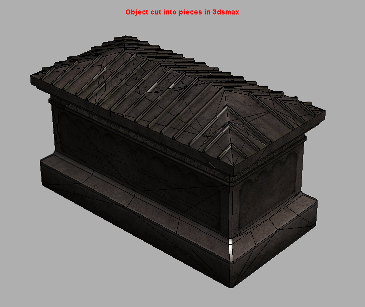
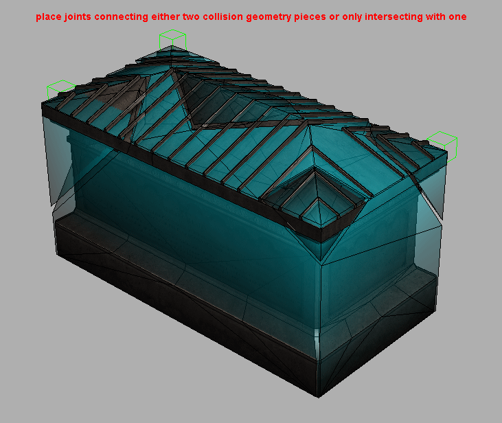
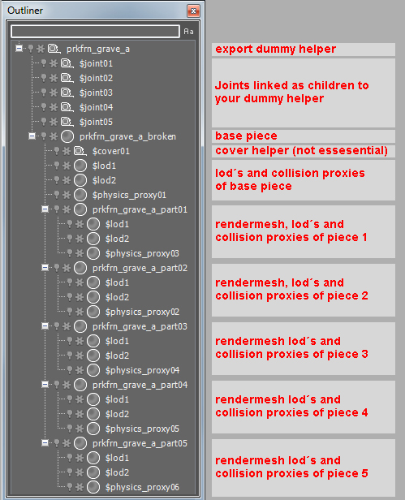
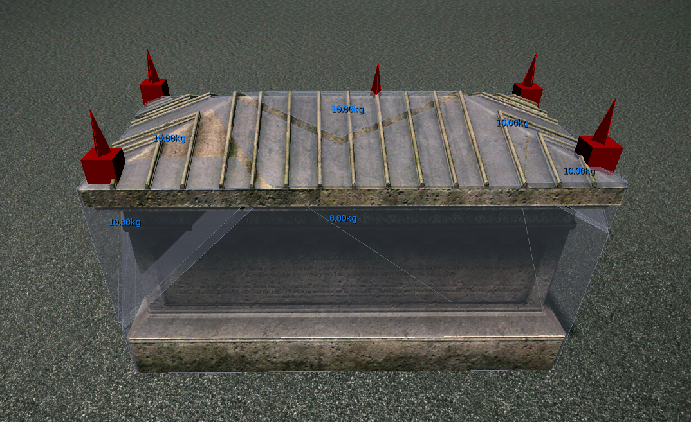
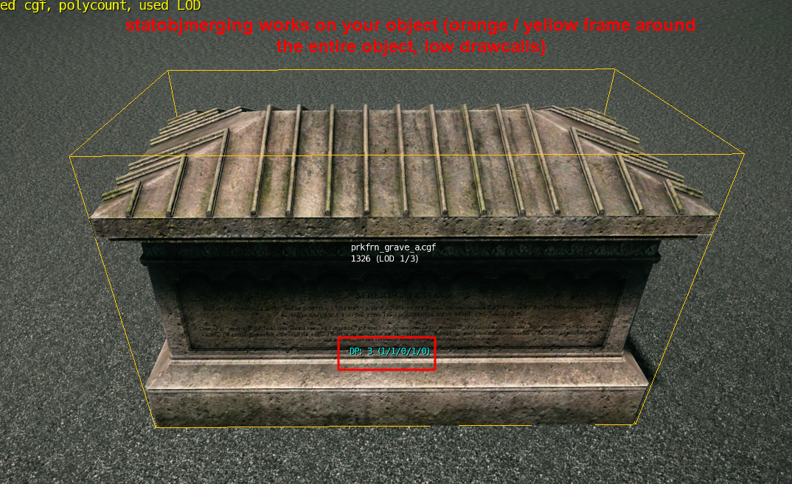
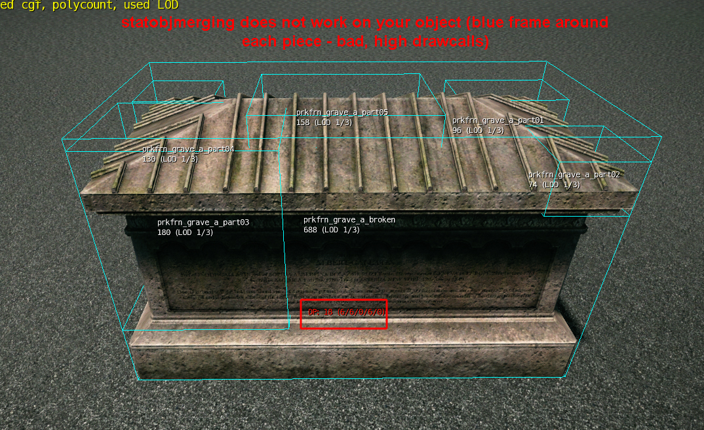

Overview
A jointed breakable object is a pre-broken object that uses joints to hold the individual pieces together. As soon as a certain amount of force (defined in the joints UDP Settings) is applied to the joint it will break the connection between the pieces and spawn a particle effect defined in the surface type of the proxy. A jointed breakable is a complex object that has a big impact on performance regarding drawcalls, memory impact and physics calculations. Whenever building one, be smart and use as few pieces you can get away with. Besides just breaking parts off of your model, you can also make pieces disappear or spawn one or several new pieces when the joint gets broken.
Sample File
Object setup in 3DMax for a simple jointed breakable
- Once you cut your object into several pieces, you need to identify which one will be the static remaining piece when the joints get broken. This is your base piece and becomes the parent render mesh for your hierarchy setup which is linked to your export dummy helper. Give it a unique node name and enter "mass=0" and "entity" in its UDP Settings. Create LOD's and collision geometry for it. Center the pivot to the export dummy helper and make sure that it does not have any transformations applied.

- Link all other pieces as children to this static piece and give them a mass in their UDP Settings (depending on their weight in kg, i.e. "mass=15" meaning the object has a mass of 15 kilograms). Give the pieces unique nodenames and create LOD's and collision geometry for them. Make sure the LOD's line up perfectly with all other LOD's on each level so that no gaps are visible. Only create LOD's for pieces that have more then 100 triangles. Center the pivots of all objects to your dummy helper and make sure they do not have any transformations applied.
- Create one dummy helper for each piece and call it $jointxx (xx=00,01,02,...). Set a limit to your joints (use 500 for testing, for more explanation in detail refer to joint values). Make sure the joints intersect with only one piece of collision geometry (connecting this piece to the world, making the joint red in debug game mode) or two different pieces of collision geometry (interconnecting those two pieces, making the joint light grey in debug gamemode). The joints must not be scaled and should not be rotated.


- Export your object by adding the dummy helper to the export list with "Export File per Node" enabled and "Merge All Nodes" disabled
- Place the object as a brush in Sandbox and shoot it. It should now break.
Maya Breakable Object Tutorial
This section will get you prepared for setting up various breakables within Maya and exporting them into Sandbox. You can access it by clicking on Maya Breakable Object Tutorial.
Debugging
Enable p_draw_helpers 1 and p_debug_joints 1 in the console.
Joints connected to the world will be displayed in red. Joints interconnecting two pieces will be displayed in light grey. The "spikes" on the joint objects show the orientation. For consistent results, they should point into the z-Axis (up).

When a force is applied to a joint, the direction is shown (in this case shift and bend), together with the strength and the limit of the particular joint. Green text represents an impact with an impulse much lower then the joint limit. Yellow represents values closer to the joint limit. Red represents values which were higher than the limit - in this case the joint is broken.
The mass of your pieces will be displayed in blue, centered on the piece.
To check for drawcalls and statobjmerging, enable r_stats 6 and e_debug_draw 1.

If statobjmerging does work, your entire object will be displayed in a yellow or orange frame with a low number of drawcalls.

If statobjmerging doesn't work, the individual pieces will be displayed in a blue frame with a high number of drawcalls. Statobjmerging must always work on your object.
Troubleshooting
Q: The joints do not show up.
A: Check naming convention ($joint01, $joint02,...). Check if they have transformations on them. If so, recreate them and reposition them.
Q: My object does not break when shot.
A: Check that the weapon you are using is strong enough by enabling p_draw_helpers 1 and p_debug_joints 1. If not, lower the joint limit in the UDP Settings.
Q: My object breaks but random pieces disappear.
A: One of your joints is intersecting with more then two pieces of collision geometry. One of your pieces is missing a joint. Check that all pieces have a mass value and all joints have a limit value (or any other from the Joint Properties section). Check that your joints are big enough and intersecting with at least one piece of collision geometry.
Q: My objects jitter when shot.
A: There is not enough space in between your collision geometry pieces.
Q: After the pieces have been shot, they disappear.
A: This is the default behavior to save on physics calculations. If you need your pieces to not disappear, add "entity" to their UDP Settings.
Q: Statobjmerging does not work on my jointed breakable.
A: Check that all surfacetypes in your material are set to non breakable ones (especially check for glass and wood surfacetypes). If you need breakable glass, separate the glass into its own cgf and create a new material for it. Check for the polycount on your base object - If it is higher then 3000, separate the breakable pieces into their own cgf files. (refer to Restrictions).
Q: One of the pieces remains floating after I shoot the model into its separate parts.
A: The model needs a grounded piece. Place a joint on a part of the model where it will be touching the terrain, to 'ground' the model.
Restrictions
- A joint can only connect two pieces with each other (joint displayed in light grey) or one piece to the world (Joint displayed in red).
- Statobjmerging will only work until a certain polygon threshold is reached. Above that threshold, it becomes too expensive to use this feature. This happens often when using huge buildings with a very polycount heavy base piece and only small chunks that break. To circumvent this issue, you can create a new .cgf that only contains the breakable pieces without the base piece and place it manually in the editor.
- Each piece must be its own node with its own lods and collision geometry.
- Collision geometry of pieces must not intersect with each other. There must be a gap in between different collision geometry pieces.
- Each joint must have a limit UDP set, each piece must have a mass or density UDP set.
- Never scale a joint! If you need a new size, create a new joint. The scaling value will be passed on to the engine and causes wrong results in the simulation.
- Each Jointed breakable object only supports the material it has been exported with. If you assign a new material to it in Sandbox, it will revert to the default material as soon as a joint is broken.
- Jointed breakable objects support up to 64 individual pieces, however you should try to keep the number much lower in order for statobjmerging to work.
- If the material of your breakable object contains a submatid with a breakable surfacetype (mat_glass_breakable_thin_small, mat_glass_breakable_thin_large, mat_glass_breakable_safetyglass_small, mat_glass_breakable_safetyglass_large, mat_glass_unbreakable_roosevelt, mat_glass_unbreakable_spiderweb, mat_wood_breakable_medium, mat_wood_breakable_thin), statobjmerging will not work.
- Do not use physics geometry merged into the rendermesh and physics geometry separated into its own $physics_proxy node. Always separate physics to $physics_proxy when working with jointed breakables.
- Only add UDP's to your rendermesh - LOD's and collision geometry do not need them and will inherit their parents values.
- Use only one $physics_proxy node per piece. If you need more, merge them into one node (you cannot use primitives in this case).